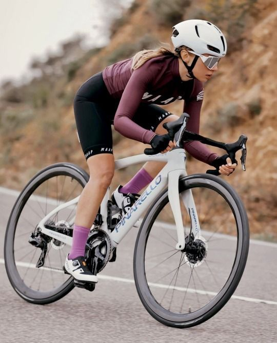
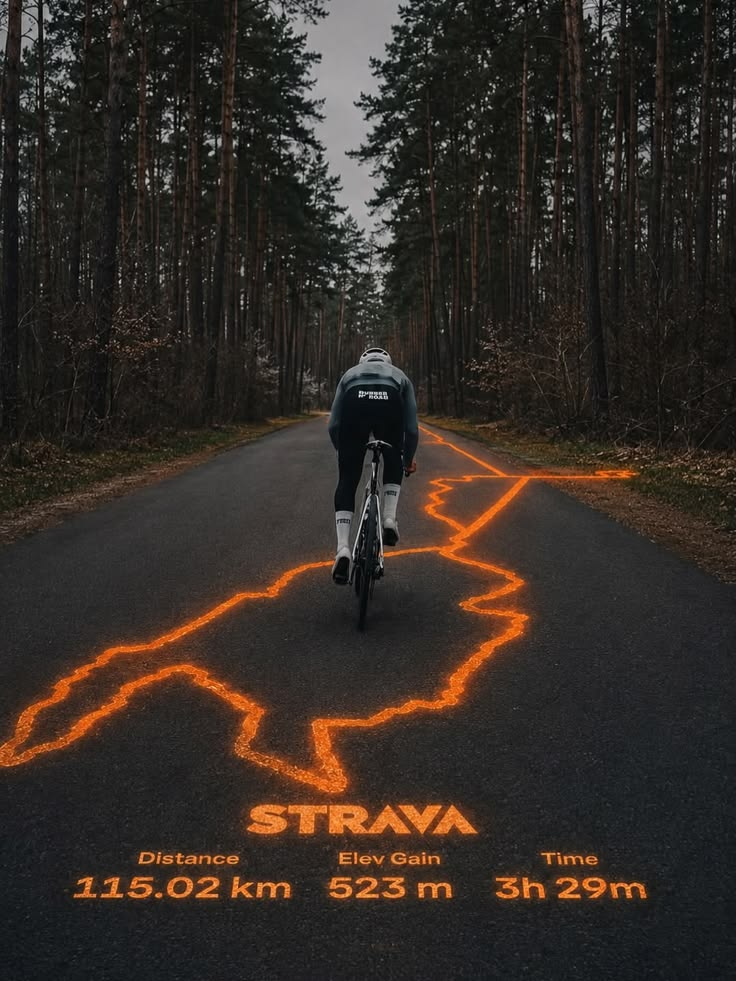
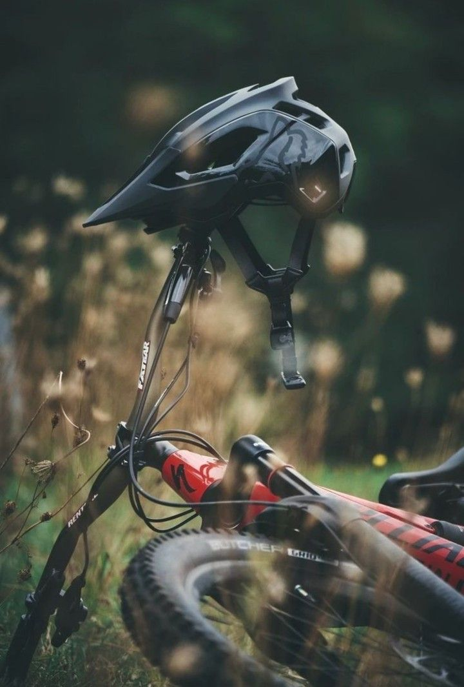

Alquiler de bicicletas
Alquila una bicicleta en Rueda Libre
y recorre Medellín a tu propio ritmo.Contamos con una opción práctica para disfrutar de
los parques, ciclovías y lugares emblemáticos de la ciudad, mientras vives una experiencia
divertida
y
saludable. Todas nuestras bicicletas incluyen
casco y candado
Reserva ahora

Rutas guiadas
Descubre Medellín de una manera única con nuestros recorridos
guiados
en bicicleta. Acompañado por un guía, podrás conocer lugares emblemáticos, explorar
diferentes sectores de la
ciudad y aprender sobre su cultura, historia y transformación.
Échale un vistazo a nuestras
rutas

Taller básico
¡Tu bicicleta siempre lista para rodar! En nuestro taller ofrecemos
servicios
de
mantenimiento sencillo, como revisión de frenos, ajuste de cambios y
calibración de
llantas,
para que disfrutes de tus recorridos con mayor tranquilidad.
